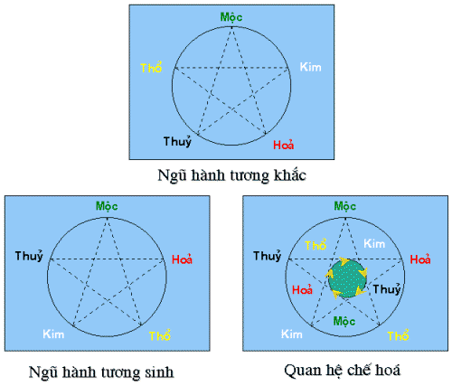

|
106.
Thế nào là âm dương, ngũ hành?
1. Thế nào là "Âm dương"?
Âm và dương theo khái niệm cổ sơ không phải là vật
chất cụ thể, không gian cụ thể mà là thuộc tính của mọi hiện tượng, mọi
sự vật trong toàn vũ trụ cũng như trong từng tế bào, từng chi tiết. Âm và
dương là hai mặt đối lập, mâu thuẫn thống nhất, trong dương có mầm mống
của âm và ngược lại.
2. Thế nào là "Ngũ hành"?
Theo thuyết duy vật cổ đại, tất cả mọi vật chất cụ thể
được tạo nên trong thế giới này đều do năm yếu tố ban đầu là nước, lửa,
đất, cây cỏ và kim loại. Tức năm hành thuỷ, hoả, thổ, mộc, kim. Để giúp
các bạn dể nhớ ngũ hành tương sinh và tương khắc, chúng tôi nêu thí dụ
mộc mạc đơn giản theo vần thơ như sau:
Ngũ hành sinh: thuộc lẽ thiên nhiên.
| Nhờ nước cây xanh mọc lớn lên |
(thuỷ sinh mộc) |
| Cây cỏ làm mồi nhen lửa đỏ |
(mộc sinh hoả) |
| Tro tàn tích lại đất vàng thêm |
(hoả sinh thổ) |
| Lòng đất tạo nên kim loại trắng |
(thổ sinh kim) |
| Kim loại vào lò chảy nước đen |
(kim sinh thuỷ) |
Ngũ hành tương khắc: lẽ xưa nay
| Rễ cỏ đâm xuyên lớp đất dày |
(mộc khắc thổ) |
| Đất đắp đê cao ngăn nước lũ |
(thổ khắc thuỷ) |
| Nước dội nhiều nhanh dập lửa ngay |
(thuỷ khắc hoả) |
| Lửa lò nung chảy đồng sắt thép |
(hoả khắc kim) |
| Thép cứng rèn dao chặt cỏ cây |
(kim khắc mộc) |
Thuyết âm dương
Căn cứ nhận xét lâu đời về giới thiệu tự nhiên,
người xưa đã nhận xét thấy sự biến hoá không ngừng của sự vật (thái cực
sinh lưỡng nghi, lương nghi sinh tứ tượng, tứ tượng sinh bát quái. Lưỡng
nghi là âm và dương, tứ tượng là thái âm, thái dương, thiếu âm và thiếu
dương. Bát quái là càn, khảm, cấn, chấn, tốn, ly, khôn và đoài).
Người ta còn nhận xét thấy rằng cơ cấu của sự biến hoá không ngừng đó là
ức chế lẫn nhau, giúp đỡ, ảnh hưởng lẫn nhau, nương tựa lẫn nhau và thúc
đẩy lẫn nhau.
Để biểu thị sự biến hoá không ngừng và qui luật của sự biến hoá đó,
người xưa đặt ra "thuyết âm dương".
Âm dương không phải là thứ vật chất cụ thể nào mà thuộc tính mâu thuẫn
nằm trong tất cả mọi sự vật, nó giải thích hiện tượng mâu thuẫn chi phối
mọi sự biến hoá và phát triển của sự vật.
Nói chung, phàm cái gì có tính chất hoạt động, hưng phấn, tỏ rõ, ở ngoài,
hướng lên, vô hình, nóng rực, sáng chói, rắn chắc, tích cực đều thuộc
dương.
Tất cả những cái gì trầm tĩnh, ức chế, mờ tối, ở trong, hướng xuống, lùi
lại, hữu hình, lạnh lẽo, đen tối, nhu nhược, tiêu cực đều thuộc âm.
Từ cái lớn như trời, đất, mặt trời, mặt trăng, đến cái nhỏ như con sâu,
con bọ, cây cỏ, đều được qui vào âm dương.
Ví dụ về thiên nhiên thuộc dương ta có thể kể: Mặt trời, ban ngày, mùa
xuân, hè, đông, nam, phía trên, phía ngoài, nóng, lửa, sáng. Thuộc âm ta có:
Mặt trăng, ban đêm, thu, đông, tây, bắc, phía dưới, phía trong, lạnh nước,
tối.
Trong con người, dương là mé ngoài, sau lưng, phần trên, lục phủ, khí, vệ;
Âm là mé trong, trước ngực và bụng, phần dưới ngũ tạng, huyết, vinh.
Âm dương tuy bao hàm ý nghĩa đối lập mâu thuẫn nhưng còn bao hàm cả ý
nghĩa nguồn gốc ở nhau mà ra, hỗ trợ, chế ước nhau mà tồn tại. Trong âm có
mầm mống của dương, trong dương lại có mầm mống của âm.
(Trích "Cây thuốc vị thuốc VN." của Đỗ tất Lợi)
Thuyết ngũ hành
Thuyết ngũ hành về căn bản cũng là một cách biểu thị
luật mâu thuẫn đã giới thiệu trong thuyết âm dương, nhưng bổ xung và làm
cho thuyết âm dương hoàn bị hơn.
Ngũ hành là : Kim, mộc, thuỷ, hoả, thổ.
Người xưa cho rằng mọi vật trong vũ trụ đều chỉ cho 5 chất phối hợp nhau mà
tạo nên.
Theo tính chất thì thuỷ là lỏng, là nước thì đi xuống, thấm xuống. Hoả là
lửa thì bùng cháy, bốc lên.
Mộc là gỗ, là cây thì mọc lên cong hay thẳng.
Kim là kim loại, thuận chiều hay đổi thay.
Thổ là đất thì để trồng trọt, gây giống được.
Tinh thần cơ bản của thuyết ngũ hành bao gồm hai phương diện giúp đỡ nhau
gọi là tương sinh và chống lại nhau gọi là tương khắc. Trên cơ sở sinh và
khắc lại thêm hiện tượng chế hoá, tương thừa, tương vũ. Tương sinh,
tương khắc, chế hoá, tương thừa, tương vũ biểu thị mọi sự biến hoá phức
tạp của sự vật.
Luật tương sinh: Tương sinh có nghĩa là giúp đỡ nhau để sinh trưởng. Đem
ngũ hành liênhệ với nhau thì thấy 5 hành có quan hệ xúc tiến lẫn nhau,
nương tựa lẫn nhau.
Theo luật tương sinh thì thuỷ sinh mộc, mộc sinh hoả, hoả sinh thổ, thổ sinh
kim, kim sinh thuỷ, thuỷ lại sinh mộc và cứ như vậy tiếp diễn mãi. Thúc đẩy
sự phát triển không bao giờ ngừng. Trong luật tương sinh của ngũ hành còn bao
hàm ý nữa là hành nào cũng có quan hệ vệ hai phương diện: Cái sinh ra nó
và cái nó sinh ra, tức là quan hệ mẫu tử. Ví dụ kim sinh thuỷ thì kim là mẹ
của thuỷ, thuỷ lại sinh ra mộc vậy mộc là con của Thuỷ.
Trong quan hệ tương sinh lại có quan hệ tương khắc để biều hiện cái ý
thăng bằng, giữ gìn lẫn nhau.
Luật tương khắc: Tương khắc có nghĩa là ức chế và thắng nhau. Trong qui
luật tương khắc thì mộc khắc thổ, thổ lại khắc thuỷ, thuỷ lại khắc hoả,
hoả lại khắc kim, kim khắc mộc, và mộc khắc thổ và cứ như vậu lại tiếp
diễn mái.
Trong tình trạng bình thường, sự tưong khắc có tác dụng duy trì sự thăng
bằng, nhưng nếu tương khắc thái quá thì làm cho sự biến hoá trở lại khác
thường.
Trong tương khắc, môĩ hành cũng lại có hai quan hệ:Giữa cái thắng nó và
cái nó thắng. Ví dụ mộc thì nó khắc thổ, nhưng lại bị kim khắc nó.
Hiện tượng tương khắc không tồn tại đơn độc; trong tương khắc đã có
ngụ ý tương sinh, do đó vạn vật tồn tại và phát triển.
Luật chế hóa: Chế hoá là chế ức và sinh hoá phối hợp với nhau. Trong chế
hoá bao gồm cả hiện tượng tương sinh và tương khắc. Hai hiện tượng này
gắn liền với nhau.
Lẽ tạo hoá không thể không có sinh mà cũng không thể không có khắc. Không
có sinh thì không có đâu mà nảy nở; không có khắc thì phát triển quá độ
sẽ có hại. Cần phải có sinh trong khắc, có khắc trong sinh mới vận hành liên
tục, tương phản, tương thành với nhau.
Quy luật chế hoá ngũ hành là:
Mộc khắc thổ, thổ sinh kim, kim khắc mộc.
Hoả khắc kim, kim sinh thuỷ, thuỷ khắc hoả.
Thổ khắc thuỷ, thuỷ sinh mộc, mộckhắc thổ.
Kim khắc mộc, mộc sinh hoả, hoả khắc kim.
Thuỷ khắc hoả, hoả sinh thổ, thổ khắc thuỷ.
Luật chế hoá là một khâu trọng yếu trong thuyết ngũ
hành. Nó biểu thị sự cân bằng tất nhiên phải thấy trong vạn vật. Nếu có
hiện tượng sinh khắc thái quá hoặc không đủ thì sẽ xảy ra sự biến hoá
khác thường. Coi bảng dưới đây chúng ta thấy mỗi hành đều có mối liên hệ
bốn mặt. Cái sinh ra nó, cái nó sinh ra, cái khắc nó và cái bị nó khắc.
Ví dụ: Mộc khắc thổ nhưng thổ sinh kim, kim lại khắc mộc. Vậy như nếu mộc
khắc thổ một cách quá đáng, thì con của thổ là km tất nhiên nổi dậy khắc
mộc kiểu như con báo thù cho mẹ. Nghĩa là bản thân cái bị có đầy đủ nhân
tố chống lại cái khắc nó.Cho nên, mộc khắc thổ là để tạo nên tác dụng
chế ức, mà duy trì sự cân bằng. Khắc và sinh đều cần thiết cho sự giữ gìn
thế cân bằng trongthiên nhiên.
Cũng trong bảng quan hệ chế hoá, chúng ta thấy mộc sinh hoả; nếu chỉ nhìn
hành mộc không thôi, thì như mộc gánh trọng trách gây dựng cho con là hoả,
nhưng nhờ có hoả mạnh, hạn chế bớt được sức của kim là một hành khắc
mộc. Như vậy mộc sinh con là hoả, nhưng nhờ có con là hoả mạnh mà hạn chế
bớt kim làm hại mộc do đó mộc giữ vững cương vị.

| Ngũ
hành |
Mộc |
Hoả |
Thổ |
Kim |
Thuỷ |
4 mùa
4 phương
Thời tiết, khí
mầu săc
mùi vị
Bát quái
Thập can
Thập nhi chi
Ngũ tạng
Lục phủ
Ngũ khiếu
Cơ thể
|
xuân
đông
ấm
xanh
chua
ly-cấn
giáp-ất
dần -mão
gan(can)
đảm(mật )
mắt
gân |
hạ
nam
nóng
đỏ
đắng
càn- tôn
bính-đinh
tị- ngọ
tim(tâm)
tiểu trường
(ruột non)
lưỡi
mạch |
giữa
ẩm
vàng
ngọt
mậu-kỷ
thìn- tuất, sửu mùi
tỳ
vị (dạ dày)
miệng
thịt |
thu
tây
mát
trắng
cay
khảm-đoài
canh- tân
thân-dậu
phổi (phế)
đại trường
(ruột già)
mũi
da lông |
đông
bắc
lạnh
đen
mặn
khôn-chấn
nhâm-qui
hơi- tí
thận
bàng quang
(bong bóng)
tai
xương |
|